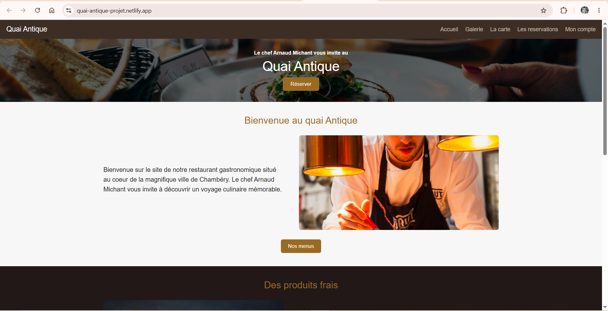
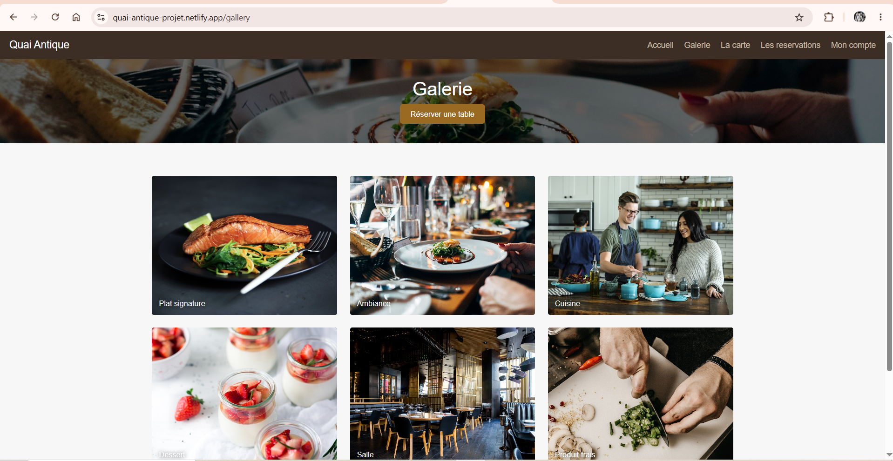
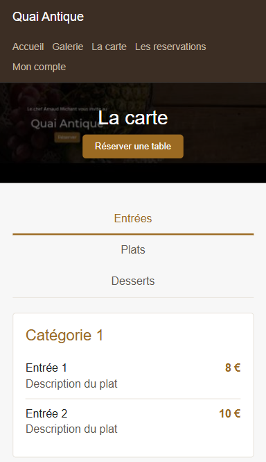
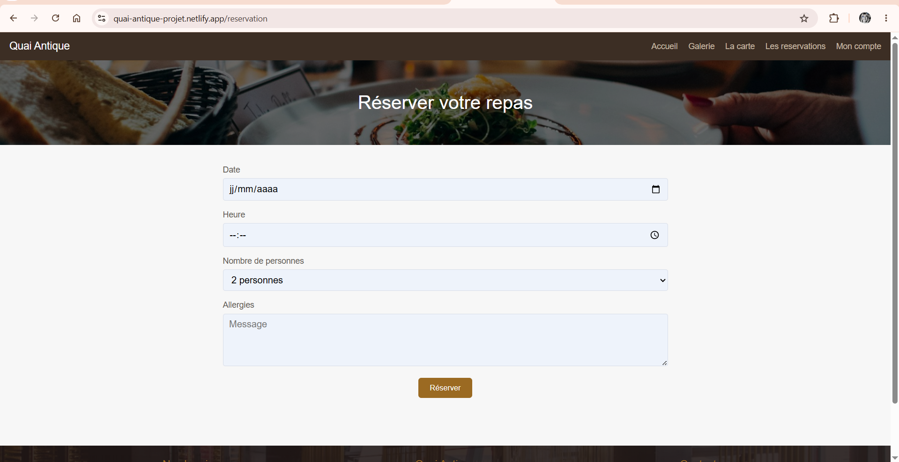
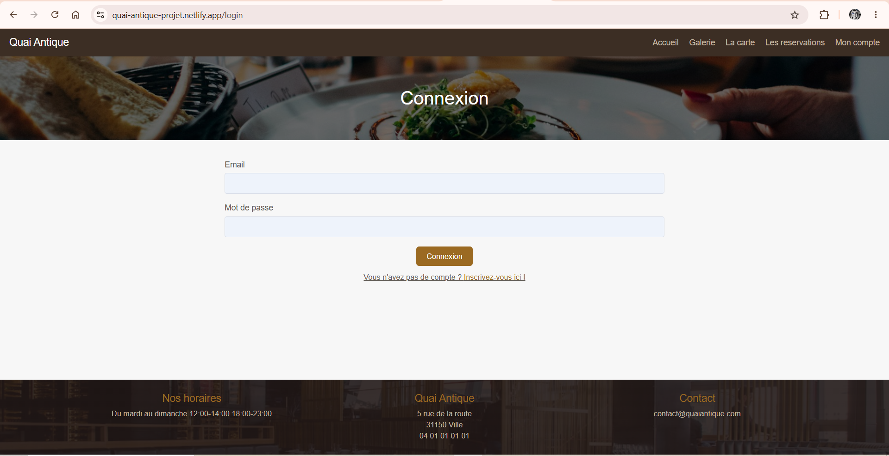
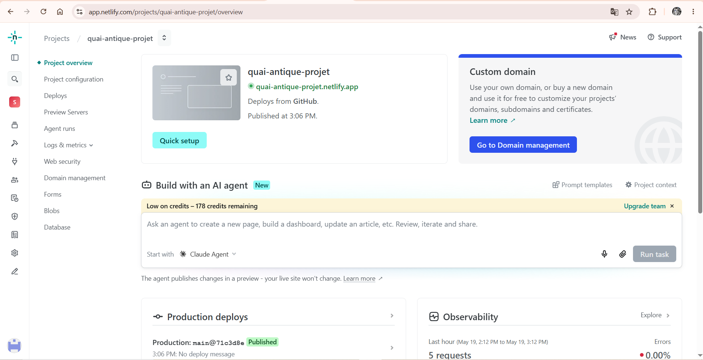
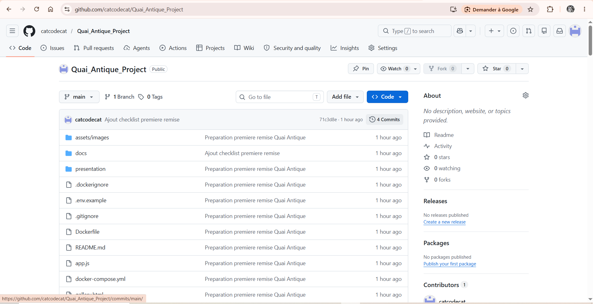

Quai-Antique
Je présente le projet Quai-Antique, un site web réalisé dans le cadre de ma formation. Pour cette première vérification, le projet est encore en cours de développement.
Présentation courte du projet
Quai-Antique est un site de restaurant fictif. Il permet de présenter le restaurant, sa galerie, sa carte et une première page de réservation.
Objectif du site
L'objectif est de créer une base de site claire pour un restaurant, puis d'ajouter progressivement un backend, une base de données et un espace administrateur.
Contexte pédagogique
Ce projet me permet de travailler la structure HTML, le style CSS, l'interactivité JavaScript, l'organisation Git, Docker et la préparation d'une documentation simple.
Cahier des charges simplifié
- Créer une page d'accueil.
- Créer une galerie.
- Créer une page menu.
- Créer une page réservation.
- Préparer une page connexion et inscription.
- Documenter le backend et la sécurité prévus.
- Préparer Git, Docker, GitHub et Netlify.
Fonctionnalités prévues
- Inscription et connexion utilisateur.
- Réservation enregistrée en base de données.
- Gestion des menus et des plats.
- Espace administrateur.
- Validation des formulaires.
- Sécurisation des données utilisateur.
Fonctionnalités déjà réalisées
- Pages HTML principales.
- Navigation entre les pages.
- Mise en page CSS.
- Responsive de base.
- Onglets JavaScript sur la page menu.
- Messages simples après l'envoi des formulaires.
- Documentation de première remise.
Technologies utilisées
- HTML5
- CSS3
- JavaScript
- Git
- Docker avec Nginx
- GitHub
- Netlify
Pour cette première vérification, je garde volontairement la structure HTML/CSS/JavaScript actuelle.
Structure des fichiers du projet
Quai_Antique_Project/
├── assets/images/
├── docs/
├── presentation/
├── screens/
├── index.html
├── gallery.html
├── menu.html
├── reservation.html
├── login.html
├── register.html
├── styles.css
├── app.js
├── README.md
├── Dockerfile
├── docker-compose.yml
├── .gitignore
└── .env.exampleSécurité prévue
La sécurité réelle sera ajoutée avec le backend. Pour la suite, je prévois le hash des mots de passe avec bcrypt, une authentification JWT ou session, des variables d'environnement, la validation des formulaires, la protection CORS et la gestion des rôles.
Backend et base de données prévus
Le backend n'est pas encore développé. Je prévois d'utiliser Node.js avec Express. La base de données devra contenir les utilisateurs, les réservations, les menus, les plats, les horaires et les avis.
Docker / GitHub / Netlify
Docker sert à lancer le site statique avec Nginx. GitHub sert à versionner le projet. Netlify sert à montrer une première version déployée.
Liens du projet
État actuel du projet
Le projet est une première version fonctionnelle côté interface. Les pages existent, mais les formulaires ne sont pas encore reliés à une API et aucune donnée n'est encore enregistrée en base.
Ce que je présente au professeur
Pour cette première vérification, je présente une première version du site Quai-Antique. Le projet contient actuellement une interface HTML/CSS/JavaScript, une documentation de base, une configuration Docker simple et les premiers éléments nécessaires pour expliquer la suite du développement.
Captures d'écran







Fichiers nécessaires pour montrer le projet au professeur
README.mdpresentation/presentation-quai-antique.htmlpresentation/presentation-quai-antique.mdscreens/- lien GitHub
- lien Netlify
Dockerfiledocker-compose.yml.gitignore.env.example- documentation dans
docs/
Prochaines étapes
- Corriger les remarques du professeur.
- Créer le backend Express.
- Créer la base de données.
- Connecter les formulaires.
- Ajouter une vraie authentification.
- Créer l'espace administrateur.
- Renforcer la sécurité.
Conclusion de l'étudiant
Cette première version me permet de montrer la base du projet Quai-Antique. Le site n'est pas encore terminé, mais il contient déjà les pages principales, une première organisation de fichiers, des captures d'écran, une documentation et les liens GitHub et Netlify.